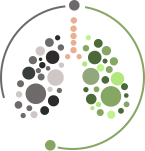
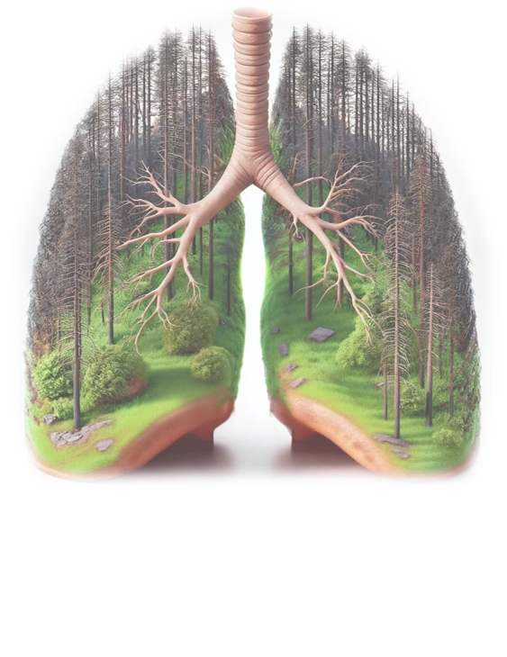
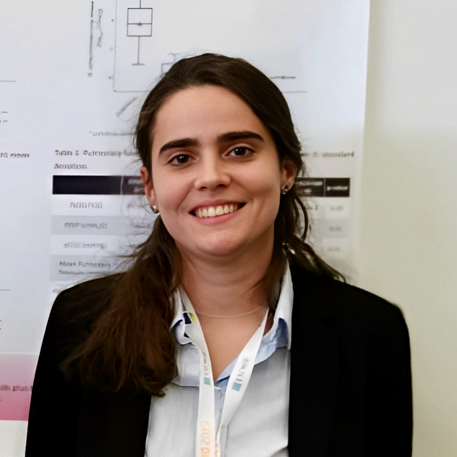

1 August 2026
Project kick-off
RESTORE begins its journey in Team 6 at CR2TI, Nantes Université.
Read more →
RESTOREPneumonia is one of the most common causes of death worldwide. RESTORE explores whether restoring a healthy lung microbiome can help fight pneumonia.

Lower respiratory infections, including pneumonia, rank among the leading global causes of mortality, accounting for approximately 2.7 million deaths worldwide in 2023. [WHO]
Treatments mostly target the pathogen, a “one-size-fits-all” approach that overlooks the interactions between the host and the microbiome.
Although the lungs were once considered sterile, we now know that healthy lungs harbour a diverse, metabolically active microbial community. A core group of microbes typical of healthy airways is associated with respiratory health, and its depletion has been linked to hospital-acquired pneumonia. [REF] Understanding how this community interacts with the host may offer new ways to approach pneumonia.
Re-establishing the abundance and functions of a healthy core respiratory microbiome—by administering a probiotic containing a consortium of lung-specific commensal bacteria and/or metabolites and peptides derived from this consortium—could mitigate pneumonia severity by modulating pathogens and mucosal immunity.
Use existing patient cohorts and multi-omics data to identify bacteria, and the molecules they produce, whose loss is linked to pneumonia severity.
Study in the lab how these bacteria interact with each other and with pathogens through their derived metabolites and peptides.
Evaluate in vivo the therapeutic potential of a lung-specific bacterial consortium and its derived products during pneumonia.
RESTORE begins its journey in Team 6 at CR2TI, Nantes Université.
Read more →Poster presentation: “The effects of Streptococcus mitis and its lactate-derived product on alveolar macrophages during Escherichia coli pneumonia”.
Read more →Publication in Nature Communications: “Identification of functional bacterial-viral pneumotypes associated with airway inflammation and all-cause mortality in critically ill patients”.
Read more →“The effects of Streptococcus mitis and its lactate-derived product on alveolar macrophages during Escherichia coli pneumonia”.
“Identification of functional bacterial-viral pneumotypes associated with airway inflammation and all-cause mortality in critically ill patients”.

I am a postdoctoral researcher with a strong background in translational research, specialising in respiratory infections, particularly pneumonia in critically ill patients. My experience spans animal models of lung infection and large-scale clinical observational studies.
Reestablishing the lung microbiome: preclinical evaluation of targeted probiotics for pneumonia treatment (RESTORE)
Grant / reference: 101198435Definition of sub-phenotypes of pneumonia based on the respiratory microbiome composition to predict microbial and clinical treatment failures (RESPIRE4)
Grant / reference: R4202305-01039Symbiotic microbiome interactions in pneumonia treatment: gateways to immune homeostasis (SYNERGIA)
Defining the threshold for the diagnosis of ventilator-associated pneumonia using the BioFire FilmArray Pneumonia Panel
[Role in RESTORE]

[Institution and short biography]
[Role in RESTORE]
[Institution and short biography]
[Role in RESTORE]
[Institution and short biography]
My experience of preparing a Marie Skłodowska-Curie Postdoctoral Fellowship proposal.
Read more →How to build connections and collaborations in research.
Read more →